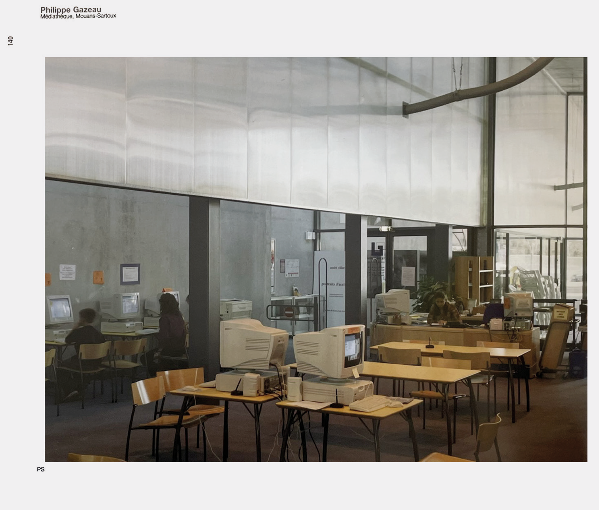
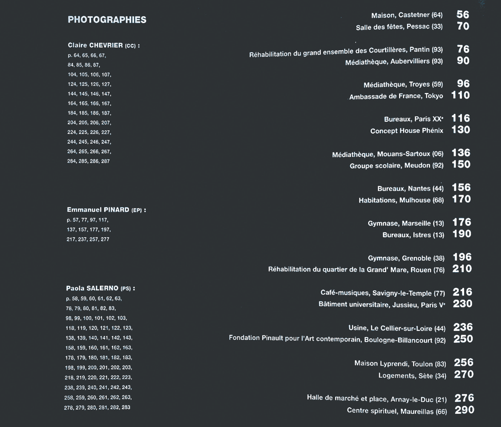
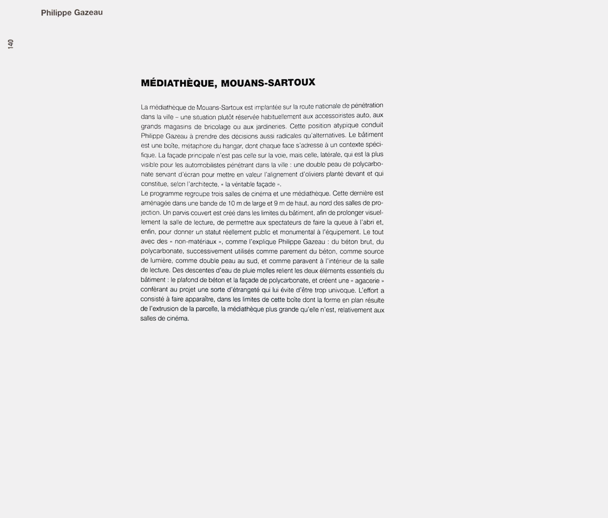
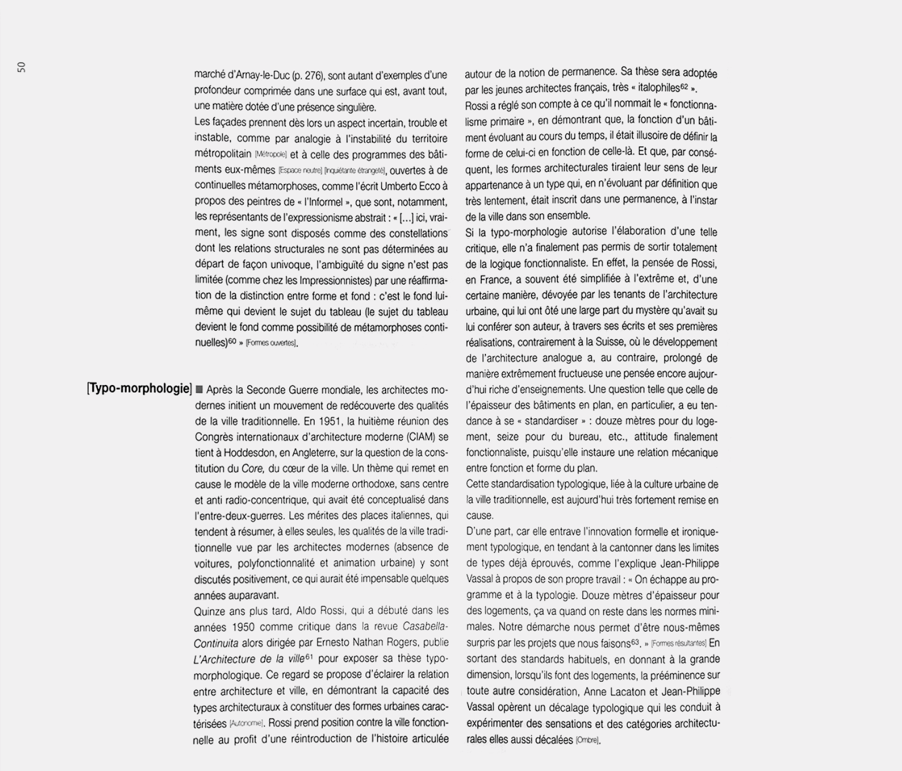
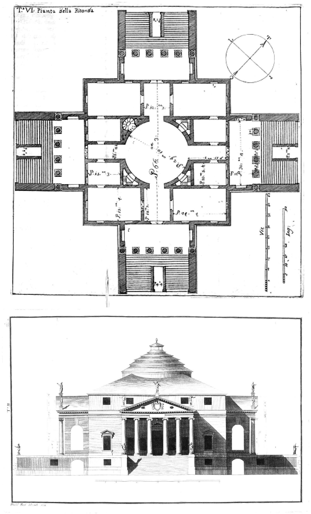
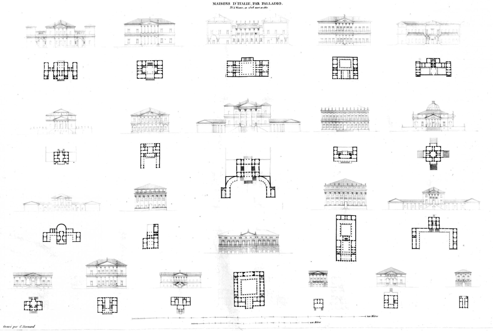
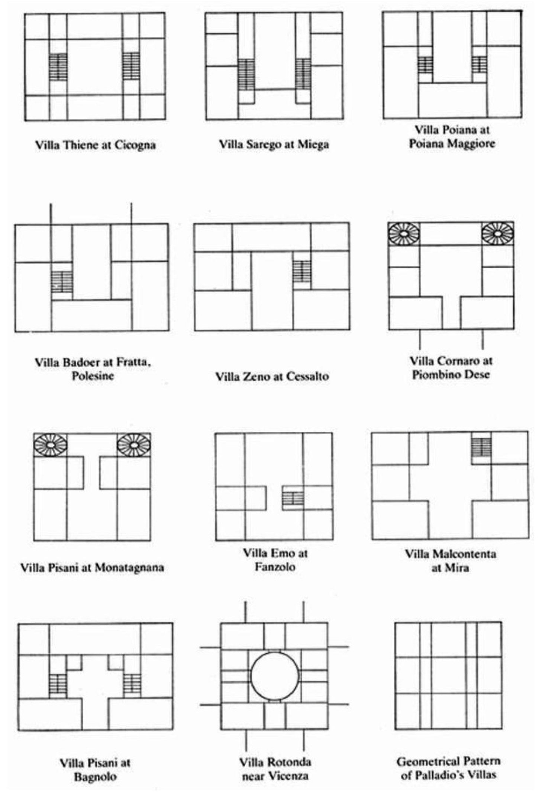
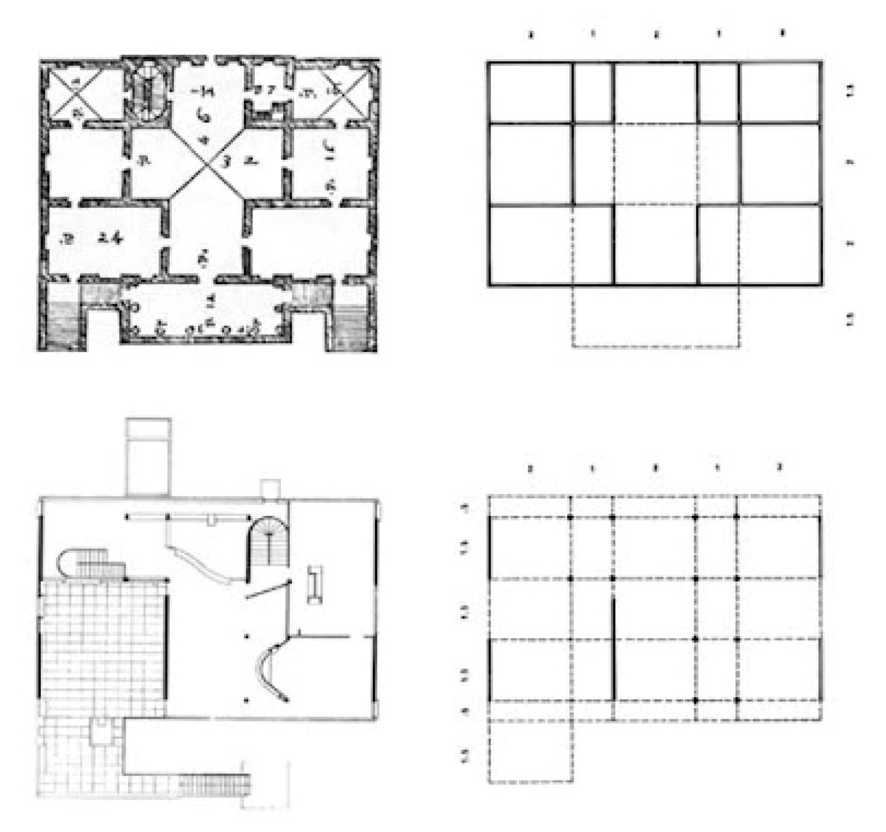

What you read is what you get
Hugo Forté
Club ASAP 10
avril 2026
Temps de lecture : 10 min
Si j’avais un centime par contribution au club ASAP qui commence par une anecdote lors d’une prise de parole publique de Jean-Louis Violleau, j’aurais deux centimes. Ce qui n’est pas beaucoup, mais reste quand même préoccupant pour une association qui vise à tuer ses pères.
Cela devait être en mars 2025, à l’occasion de la sortie de son livre « De quoi l’architecte est-il l’auteur » dans la librairie Volume, à République. Comme on pouvait s’y attendre quand on connaît la sociologie (et osons le dire, l’âge) du public de ce genre de rencontre, la discussion a beaucoup plus tourné au name-dropping et au concours d’anecdotes qu’à la réelle analyse de l’ouvrage qui lui ne tombe pourtant pas dans ces revers.
Un des axes du livre est la comparaison architecture-cinéma, que tous ceux ici qui ont eu Jean-Louis en prof connaissent désormais sur le bout des doigts et qui se base notamment sur deux comparaisons :
- Le cinéma comme l’architecture sont des industries autant que des arts et donc le réalisateur comme l’architecte sont avant tout des acteurs économiques participant à un milieu qui dépasse leur intentions individuelles (on construit et on réalise toujours avec l’argent des autres).
- Un film comme un édifice est un objet complexe qui n’est jamais le fruit du travail d’une seule personne, mais bien d’une multitude d’experts sachants et d’ouvriers exécutants. La dénomination d’auteur qui est reconnue à un seul de ces chaînons est le résultat d’une lutte d’influence entre les acteurs et qui peut donc évoluer au fil de l’histoire de l’œuvre, mais aussi du médium.
Les implications matérialistes d’une telle comparaison n’ont pas particulièrement structuré la discussion à Volume, et à ces considérations, les jouteurs verbaux ont préféré la question du style, qui rendrait si reconnaissable la main tenant le stylo ou la caméra. Et on compara gaîment Palladio à Godard.
Quelque chose me semblait étrange à ce moment-là. Même si je connais le résumé scénaristique de la plupart des films de Godard, je n’en ai réellement vu qu’une quatre ou cinq. Il me semble que c’est bien insuffisant pour me permettre d’en tirer la moindre conclusion sur le style de Godard et j’ose imaginer que celles et ceux qui débattaient de sa manière de filmer les voitures avaient, eux, vus suffisamment de sa filmographie pour pouvoir émettre de tels jugements.
Pire encore, je n’ai jamais visité la moindre villa palladienne. Il m’est difficile de croire que les personnes présentes ce soir à Volume et très heureuses de se chercher des poux sur leur définition personnelle d’un plan « palladien » aient toutes fait le pèlerinage au sein des 80 villas dispersées dans la Vénétie. Réalistiquement, leur connaissance de l’œuvre de Palladio était principalement basée sur les plans et les élévations de ses ouvrages, fidèlement reproduits par lui-même en premier lieu et puis finalement par l’ensemble des théoriciens classiques de l’architecture, de Scamozzi à Colin Rowe.
La question se pose alors, pourquoi n’exigeons-nous qu’une connaissance en seconde main des édifices pour en émettre la critique, ce qui serait inacceptable pour tout autre médium ? Et qu’est-ce que cela implique pour la critique architecturale ?
Il est évident que la réponse à la première question tient à la question pratique. L’architecture est un art difficilement reproductible, et on ne saurait faire tourner les édifices de ville en ville comme on le fait pour les tableaux. L’amateur d’architecture est dépendant de sources secondaires car il ne peut pas faire l’expérience par lui-même l’ensemble des édifices qui l’intéressent. Ainsi, si la critique d’art s’adresse la plupart du temps à des interlocuteurs qui ont déjà rencontré l’œuvre discutée, la critique d’architecture doit avant d’émettre la moindre analyse, représenter l’édifice concerné. Le critique d’architecture est aussi journaliste : en plus d’interpréter l’acte artistique, il doit en reporter l’événement.
Le critique d’architecture se rapproche alors du moine copiste, dans le sens où il prolonge lui-même la portée d’une œuvre non aisément diffusable. Il est intéressant de noter qu’effectivement la rédaction d’une critique architecturale intègre les quatre métiers que relevait Barthes dans les scriptoriums :
« Nous ne connaissons aujourd’hui que l’historien et le critique (encore veut-on indûment nous faire croire qu’il faut les confondre) ; le Moyen Âge, lui, avait établi autour du livre quatre fonctions distinctes :
le scriptor (qui recopiait sans rien ajouter), le compilator (qui n’ajoutait jamais du sien), le commentator (qui n’intervenait de lui-même dans le texte recopié que pour le rendre intelligible) et enfin l’auctor (qui donnait ses propres idées, en s’appuyant toujours sur d’autres autorités).»
Roland Barthes, Critique et vérité, 1966
C’est ce qu’on retrouve dans la plupart des critiques d’architecture. Ici un exemple « pur » avec le bouquin de 2003 « l’architecture du réel » dirigé par Eric Lapierre et qui donne la part belle à la photographie, outil le plus scripteur pour montrer l’architecture telle qu’elle est et non telle qu’elle se raconte. On a bien, une reproduction « neutre » de l’objet étudié, une compilation de ces reproductions, un commentaire rapide pour contextualiser chaque fragment, et finalement une préface théorique apportant un éclairage plus personnel de la part d’Eric Lapierre.




Eric Lapierre (textes), Claire Chevrier, Emmanuel Pinard & Paola Salerno (photos), Architecture du réel, architecture contemporaine en France, 2003
Mais Barthes alerte sur les limites de cette organisation, qui s’était pourtant « établie explicitement à la seule fin d’être ‘‘fidèle’’ au texte ancien » :
« Un tel système a cependant produit une ‘‘interprétation’’ de l’Antiquité que la modernité s’est empressée de récuser et qui apparaîtrait à notre critique ‘‘objective’’ parfaitement ‘‘délirante’’.
C’est qu’en fait la vision critique commence au compilator lui-même : il n’est pas nécessaire d’ajouter de soi à un texte pour le ‘‘déformer’’ : il suffit de le citer, c’est-à-dire de le découper : un nouvel intelligible naît immédiatement ; cet intelligible peut être plus ou moins accepté : il n’en est pas moins constitué. Le critique n’est rien d’autre qu’un commentator, mais il l’est pleinement : car d’une part, c’est un transmetteur, il reconduit une matière ; et d’autre part, c’est un opérateur, il redistribue les éléments de l’œuvre de façon à lui donner une certaine intelligence, c’est-à-dire une certaine distance. »
Roland Barthes, Critique et vérité, 1966
Avec cette mise en garde en tête, retraçons l’histoire des reproductions critique de Palladio, on verre qu’on y retrouve alors nos quatre rôles.
En premier, le scriptor Ottavio Scamozzi transcrit l’œuvre de Palladio sous forme livresque pour faciliter sa diffusion. Bien que son nom soit directement hérité du disciple de Palladio, Vincenzo Scamozzi, il est intéressant de noter que Ottavio tient à reproduire les édifices réalisés et non les idées d’origine ou les plans remaniés pour l’édition des quatre livres du vivant de Palladio. On peut donc considérer que Scamozzi livre une véritable transcription fidèle des édifices, non problématisée pourrait-on dire.
Vient ensuite le compilator, sous la personne de Jacques Louis Nicolas Durand. Dans son recueil, il met sur la même planche l’ensemble des villas palladiennes. Il n’en modifie pas le plan mais par la comparaison qu’il invite à en faire (recueil et parallèle) il oriente le regard du lecteur sur les caractéristiques communes de celles-ci. Il participe alors à la reconnaissance (déjà bien intégrée à l’époque) d’un style de plan palladien basé sur la symétrie et la hiérarchie des espaces via notamment leurs proportions géométriques.


Droite : Jacques Louis Nicolas Durand, Recueil et parallèle des édifices de tout genre, anciens et modernes, 1801
Mais si Durand reproduit simplement les édifices, un siècle plus tard Rudolf Wittkower va plus loin en les diagrammatisant et les synthétisant dans un but analytique. Le compilator tronque et ajoute, il réduit le travail de Palladio à une tension fine entre forces centrifuges et centripètes, et insuffle à sa lecture un idéal humaniste traitant du rapport entre l’homme et son environnement que la géométrie palladienne illustre selon-lui.
Enfin, en s’appuyant sur les diagrammes de Wittkower, Colin Rowe développe son nouveau discours qui se base sur la mise en confrontation de la « thèse » de l’œuvre d’origine avec une autre de même autorité, ici les villas corbuséennes.


Droite : Colin Rowe, Mathematics of the ideal villa, 1976
Or il est évident sous l’éclairage Barthesien, qu’un tel usage du matériau d’origine par l’auctor n’est possible que par les actions des opérateurs précédents qui l’ont fait parvenir jusqu’au dernier maillon, et qui ce faisant l’ont transformé. Rowe n’aurait pas pu parvenir à une conclusion différente car la trajectoire de la critique de Palladio amenait nécessairement à celle-ci.
On repense alors à la question de l’auteur en architecture et de sa différence avec le cinéma. Ce sont deux champs culturels dans lesquels il semble pointer une volonté de déboulonner les auteurs et de redonner voix au collectif des faiseurs souvent effacés derrière. Peut être que la différence d’expérience avec l’œuvre explique la différence de résultat de cette quête entre le cinéma et l’architecture.
Quand je vois un film de Godard, je vois aussi un film avec Belmondo, je vois aussi un film cadré par Raoul Coutard. Je suis au contact du travail de l’ensemble des participants à l’œuvre.
Mais quand mon expérience de Palladio se base uniquement sur les plans, coupes et axonométries, je ne vois jamais les fresques de Véronèse ou Zelotti alors que par leur trompe l’œil elles ouvrent des fenêtres et des corridors supplémentaires qui contredisent même parfois la symétrie figée du plan. Le plan étant la trace de l’architecte uniquement contrairement au batiment, réduire l’architecture à ses géométraux participe à la starification de l’architecte et l’effacement du reste de l’équipe.
Pour conclure, cette considération du rôle spécifique de critique architecturale est à prendre en compte car elle implique des responsabilités supplémentaires toutes liées à la troncature de l’œuvre rendue obligatoire par l’impossibilité de sa reproduction. Chaque critique portée sur une œuvre est le démarrage d’un chemin de transmission, qui oriente, limite et surcharge sa compréhension et même sa connaissance. Le critique d’architecture doit en prendre conscience et acte. Car pour la majorité de son lectorat, son expérience de l’édifice ne sera pas autre que son expérience de sa critique.
L'ensemble des articles issus du club asap 10 sont disponibles ci-dessous:
| # | Titre | Auteur | |
|---|---|---|---|
| 100 | Les styles de la critique | Hugo Forté | Club #10 |
| 101 | L'oeuvre critique | Maxime La Goutte | Club #10 |
| 102 | Démanteler le spectre post-critique | Louis Fiolleau | Club #10 |
| 103 | The backrooms, une fiction critique populaire | Titouan Gracia | Club #10 |
| 104 | What you read is what you get | Hugo Forté | Club #10 |
| 105 | Un problème chez ASAP | Herzgeg & Deux Neurones | Club #10 |
| 106 | Tableau nantais d'une critique | Un gars laxique | Club #10 |